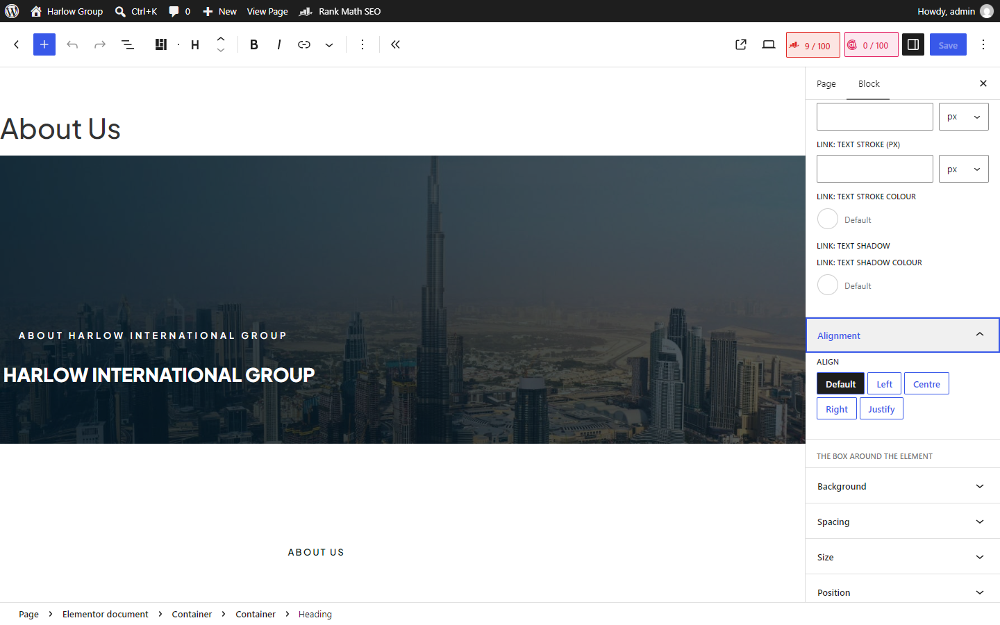
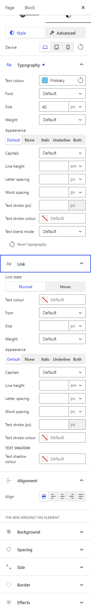
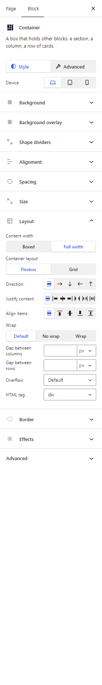
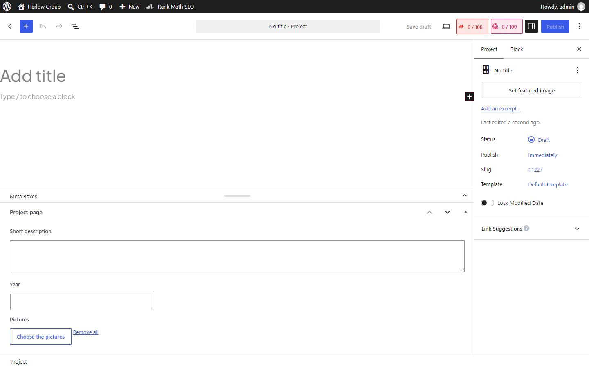
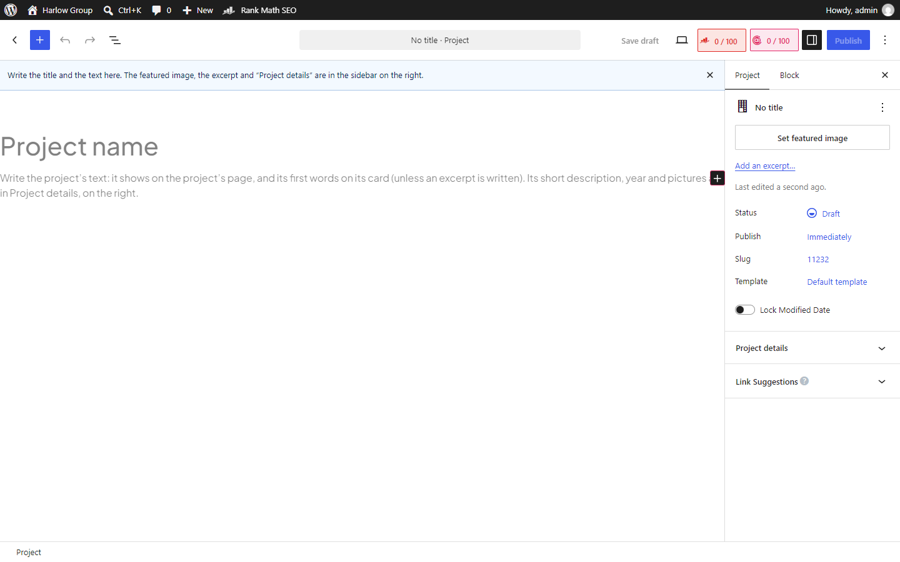
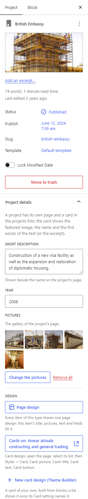
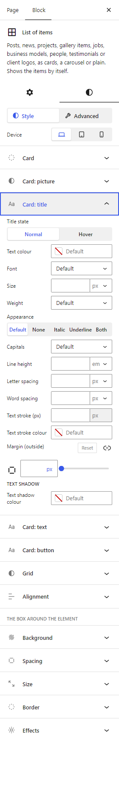
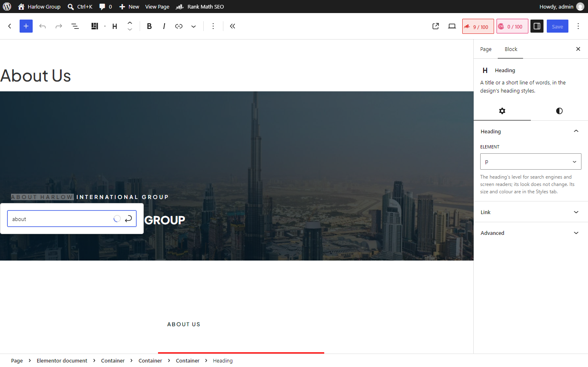
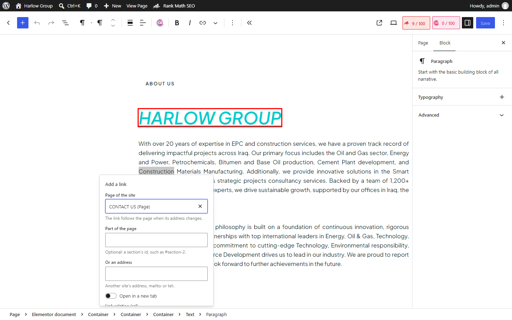

المحرّر بعد جولة الـ UX
الشريط الجانبي، إضافة مشروع أو خبر جديد، تصميم الكروت، والروابط. كل الصور من المحرّر الحقيقي عندنا.
١. الشريط الجانبي (Styles) صار Property panel



- Advanced فيه: Position، Transform and hover، Motion، ID والـ classes، Display conditions، Custom CSS. التبويب يلي بتختاريه بيضل لما تنتقلي لعنصر تاني.
- اسم الجزء ما عاد يتكرر بكل سطر ("Title: Size" صار "Size" تحت مجموعة Title).
- القيم والـ CSS يلي بتطلع على الصفحة ما تغيّروا، فكل تعديل قديم بيضل متل ما هو.
٢. مشروع أو خبر جديد



نفس الشي للأخبار والمقالات والوظائف والـ Business models والأشخاص والـ Testimonials، كل نوع بكلامه وحقوله.
٣. تصميم الكروت

- التعديل بيمشي على كل كروت هالـ List مرة وحدة.
- إذا بدك ترتيب كرت مختلف كلياً: New card design بيفتح Theme Builder على "List card"، وبعدين بتختاريه من إعدادات الـ List (Card).
- والـ Carousel صار فيه Dots (Settings → Carousel → Dots).
٤. الروابط


الرابط لصفحة من الموقع بينحفظ باسمها، فإذا تغيّر عنوان الصفحة بعدين الرابط بيلحقها.
٥. مشاكل لقيتها وصلّحتها بالطريق
- حقول المشروع والـ Business model والـ Testimonial ما كانت توصل للمحرّر الجديد أبداً (WordPress ما كان يبعتها)، صارت توصل وتنحفظ.
- الـ Carousel تبع الـ List كان فيه مجموعة Dots ما بتعمل شي لأنو ما في Dots أصلاً، هلّق في.
- الـ Gallery كانت ما تبيّن بالمحرّر (ارتفاعها صفر)، والـ Table of contents والـ Shortcode الفاضيين كمان، هلّق بيبيّنوا.
- Rank Math كان يرجّع نافذة الرابط القديمة فوق الجديدة، انحلّت.
- إذا كتبتي CSS ID للـ List، كانت تختفي بالمحرّر (السيرفر يرفض الطلب). صار إلها CSS ID متل كل العناصر، وحقل الـ CSS ID ما بيطلع إلا للعنصر يلي بيقبله.
- مجموعات الصورة (بالـ Testimonial والـ Reviews والـ Price list) كانت تطلع قبل ما تختاري صورة، وما تعمل شي. هلّق بتطلع لما يكون في صورة.
- خيارات ما إلها أثر (Text stroke على الحرف الأول الكبير) انشالت، متل ما طلبتي: ولا خيار ما بيعمل شي.